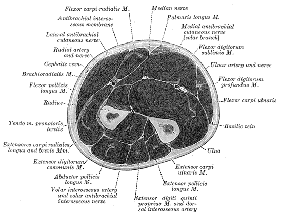

Después de la cirugía
Después de la cirugía de fractura de radio distal
Guía de recuperación para la fijación con placa y tornillos (ORIF) de una muñeca fracturada. La curación toma varios meses. El movimiento regresa primero, la fuerza después.

Lo que se hizo
El extremo fracturado del hueso radio en su muñeca fue colocado en posición y sujetado con una placa metálica y pequeños tornillos. Tiene una pequeña incisión en el lado palmar de la muñeca, cubierta con un apósito suave. En la mayoría de los casos no se coloca férula, para que la muñeca pueda comenzar con movimiento suave de inmediato. Los pacientes con una fractura muy severa pueden ser colocados en una férula para mayor protección; si es así, el Dr. Barrera se lo dirá.
La primera semana
- Mantenga el apósito limpio y seco.
- Mantenga la mano elevada por encima del corazón tanto como sea posible. Espere hinchazón significativa durante los primeros 3 a 5 días.
- Mueva los dedos completamente desde el primer día. Haga un puño y enderece los dedos muchas veces al día. Esto es esencial para prevenir la rigidez.
- Comience movimiento suave de la muñeca en los primeros días. Flexione y extienda la muñeca lentamente y rote el antebrazo dentro de un rango cómodo. No lo fuerce. El movimiento suave temprano protege contra la rigidez.
- Mueva el hombro y el codo para que no se pongan rígidos.
- No apoye peso en la mano. No levante nada más pesado que una taza de café con la mano operada.
Días 10 a 14: primer seguimiento
- El apósito y las suturas se retiran en su primera visita al consultorio.
- Puede ducharse y lavar la incisión con agua y jabón; séquela con palmaditas.
- No remoje (sin bañeras, piscinas, jacuzzis) durante 2 semanas después de la cirugía.
- La terapia de mano formal generalmente comienza alrededor de esta visita para guiar el movimiento de la muñeca.
Semanas 2 a 6: fase de movimiento
- Trabaje con la terapia de mano en el movimiento de la muñeca (flexión, extensión, rotación del antebrazo).
- Uso ligero de la mano para tareas diarias está bien.
- Aún no levante ni empuje con la muñeca. El hueso todavía está sanando.
Semanas 6 a 12: fase de fortalecimiento
- Las radiografías a las 6 semanas confirman que el hueso está sanando.
- La terapia cambia a fortalecimiento y regreso a la actividad completa.
- La mayoría de los pacientes pueden regresar al trabajo ligero a las 6 semanas y al trabajo más pesado a los 3 meses.
Dolor e hinchazón
- La mayoría de los pacientes necesitan analgésicos recetados solo por 2 a 5 días, luego cambian a acetaminofén (Tylenol) e ibuprofeno (Advil).
- Hielo sobre el apósito ayuda durante la primera semana.
- La hinchazón y rigidez en los dedos y la mano pueden durar varios meses. Continúe elevando y moviendo los dedos.
Expectativas a largo plazo
La mayoría de los pacientes recuperan el 90% de su función a los 6 meses. Algo de hinchazón, rigidez y dolor en la muñeca es común hasta por un año. La placa y los tornillos permanecen en su lugar permanentemente a menos que causen problemas, lo cual es poco común.
- Tiene fiebre superior a 101°F
- La incisión está drenando pus, se está extendiendo enrojecimiento o está muy caliente
- El dolor está empeorando a pesar del medicamento y la elevación
- Nuevo entumecimiento o hormigueo severo en los dedos (especialmente el pulgar, índice y medio)
- Los dedos se vuelven fríos, pálidos u oscuros
Relacionado
¿Preguntas?
Llame al consultorio al 646-501-4950, o consulte nuestra información de contacto.